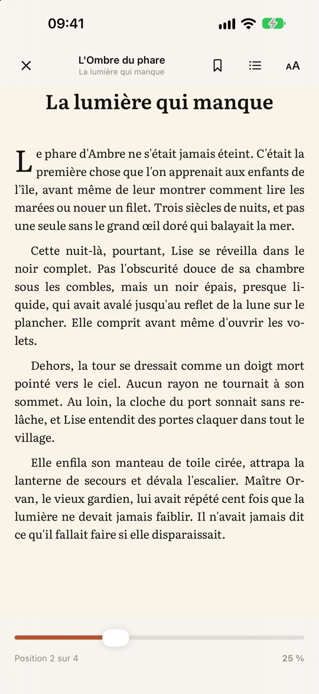
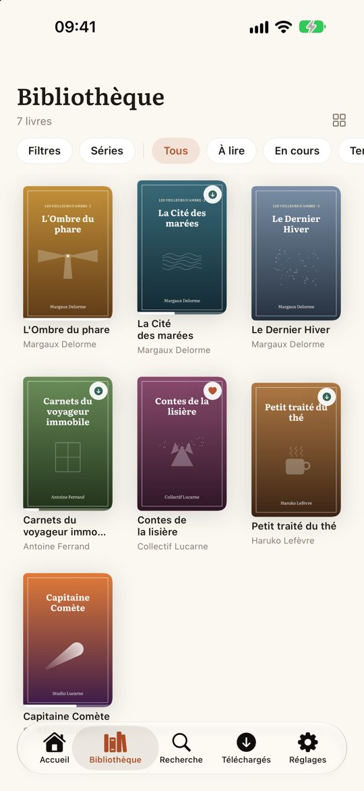
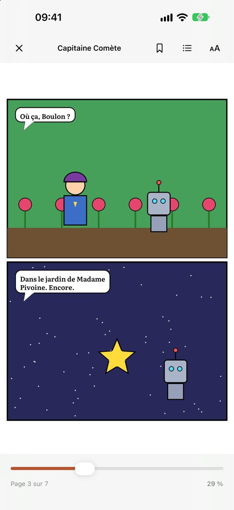

Votre bibliothèque Calibre, dans votre poche.
Bala Read se connecte à votre serveur Calibre-Web pour lire vos livres, BD et PDF, même hors ligne. Rien ne transite par nous.


Pensé pour la lecture longue
Une app douce et rapide, qui respecte votre bibliothèque et vos habitudes.
Bibliothèque instantanée
Votre catalogue s'affiche immédiatement, même sans réseau. Les nouveautés arrivent en arrière-plan. Séries, étiquettes et état de lecture.
Lecture hors ligne
Les livres que vous ouvrez restent sur l'appareil. Les téléchargements continuent même app fermée, avec leur progression.
EPUB, PDF et BD
Un lecteur moderne : pages ou défilement, thèmes clair, sépia et sombre, police, marges, sens de lecture manga.
Progression partout
Pourcentage de lecture sur chaque couverture et reprise exacte de votre page, synchronisés via votre iCloud.
Marque-pages et sommaire
Ajoutez des marque-pages, parcourez le sommaire ou les vignettes d'un PDF, sautez n'importe où avec le curseur.
Votre serveur, vos données
L'app ne parle qu'à votre serveur Calibre-Web. Aucun compte, aucune publicité, aucune statistique d'utilisation.


Besoin d'aide ?
Bala Read fonctionne avec votre propre serveur Calibre-Web (logiciel libre, auto-hébergé), via son catalogue OPDS.
Comment connecter ma bibliothèque ?
- Saisissez l'adresse de votre serveur Calibre-Web, par exemple
https://livres.mondomaine.frouhttp://192.168.1.20:8083. - Utilisez votre identifiant et votre mot de passe Calibre-Web.
- Le catalogue OPDS doit être activé (Calibre-Web › Administration › Configuration › « Activer le catalogue OPDS »).
Je n'ai pas de serveur, puis-je essayer l'app ?
Comment prendre l'app en main ?
Quels formats sont pris en charge ?
La bibliothèque ne se met pas à jour
Ma progression ne se synchronise pas entre mes appareils
Comment libérer de l'espace ?
Politique de confidentialité
Dernière mise à jour : 14 novembre 2026
Bala Read ne collecte aucune donnée personnelle. Le développeur n'a accès ni à votre bibliothèque, ni à vos identifiants, ni à vos lectures. L'app communique uniquement avec le serveur que vous indiquez et avec votre propre compte iCloud.
Données que vous saisissez
L'adresse de votre serveur Calibre-Web, votre identifiant et votre mot de passe sont enregistrés uniquement sur votre appareil, dans le trousseau sécurisé d'iOS (Keychain). Ils servent exclusivement à se connecter à votre serveur.
Données stockées sur l'appareil
- Le catalogue de votre bibliothèque (titres, auteurs, séries, couvertures), pour un affichage instantané et hors ligne.
- Les livres que vous téléchargez pour les lire hors ligne.
- Vos réglages de lecture et l'état du guide de prise en main.
- Si vous l'utilisez, la bibliothèque de démonstration, entièrement intégrée à l'app.
Ces données restent sur votre appareil et sont supprimées avec l'app, ou via Réglages › « Se déconnecter de tout ».
Synchronisation iCloud
Votre progression de lecture, vos marque-pages, vos favoris et vos collections sont synchronisés entre vos appareils grâce au stockage iCloud d'Apple (iCloud Key-Value Storage), rattaché à votre compte iCloud. Le développeur n'y a pas accès. Cette synchronisation est soumise à la politique de confidentialité d'Apple.
Communications réseau
L'app se connecte uniquement au serveur Calibre-Web que vous avez configuré, pour récupérer le catalogue, les couvertures et les livres. Aucune autre connexion n'est établie vers des serveurs tiers.
Ce que l'app ne fait pas
- Aucun compte à créer, aucune publicité.
- Aucun outil de statistiques, de suivi publicitaire ou de mesure d'audience.
- Aucune donnée vendue ou partagée avec des tiers.
Enfants
L'app ne collecte aucune donnée, y compris auprès des enfants.
Vos droits
Toutes les données étant stockées sur votre appareil, sur votre serveur ou dans votre iCloud, vous en gardez le contrôle total : supprimer l'app efface les données locales ; les données iCloud se gèrent dans les réglages iCloud de votre appareil.
Contact
Pour toute question sur cette politique : GitHub ou la page App Store de l'app › « Assistance de l'app ».